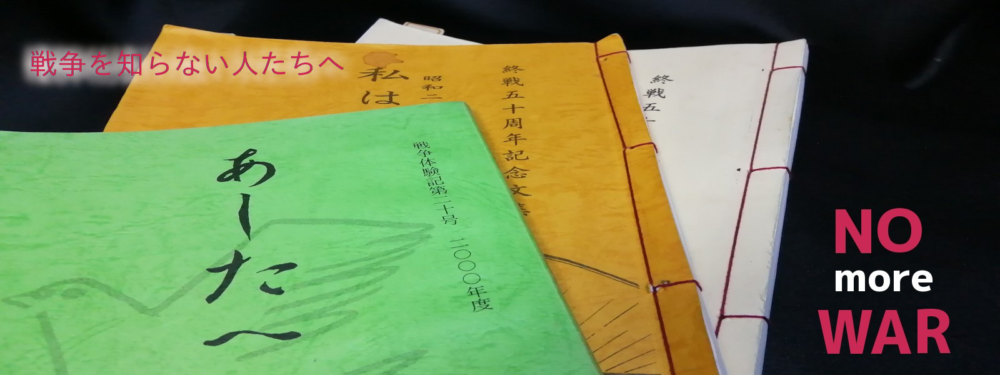

私たちが生まれる前、
太平洋戦争がありました。
その戦中と敗戦後を体験した人たちが、
お爺さんや、お婆さんになって、
次の世代の人たちに「これだけは伝えたい！」 と残した手記があります。
お爺さん・お婆さんたちが寄り合って、手作りした冊子です。
戦争で生き残れた奇跡 と、
そして 後悔 ・ 誓い ・ 願い を 伝えています。
ぜひ読んでください。
最終更新 2025.11.07
「明治」「大正」そして「昭和・初期」生まれの人たちが、自分の言葉で、それぞれの思いを書いてます。
当時の記憶をたどり、まだ書き足りないくらいの長文や、原稿用紙に戸惑いながらの作文や、短歌を詠うなど、表現は様々です。
いくつかの手記から、寄稿者の最後に伝えたかった言葉を選んでみました。
先人の言葉を残そうと電子化しました。そしてネット上で誰でも読めるようとホームページを開設しました。
このホームページに毎月10人の訪問者がいれば、この戦争体験記はネット上で永遠に生き続けます。
（ホームページの管理者があの世に消えても、このサイトが閉鎖されることはありません。）
お爺さん・お婆さんたちが伝えたかった言葉が永遠に残ります。
このホームページは永久に無料のサーバー『FreeHostBox』 を、お借りして発信しています。
FreeHostBoxはイギリスのデータセンターを利用して、学生や一般ユーザーのために完全無料サーバーを提供しているインターネット企業です。
”永久に無料でサイト存続” の条件として、”毎月１０以上のアクセスが必要” とされています。
（データー容量の有効活用のため、休眠サイトは削除されます。）
これが “毎月10人の訪問者が必要“ の理由です。
FreeHostBox 以外のレンタル・サーバーは、有料・無料に関わらず、
ホームページの更新作業や維持費の支払いが止まると、サイトは閉鎖・削除されてしまいます。
FreeHostBox の利用者が増えて、奇特な運営が継続できることを願っています。
お爺さん・お婆さんたちが、余生を楽しむ時間を割いてまで、自分たちの戦争体験を書いて残しました。
太平洋戦争の敗戦から50年経ち、戦後復興の甲斐あって、当時の日本は自由を享受し繁栄し、平和な時代でした。
しかし、お爺さん・お婆さんたちには「同じ過ちを繰り返す」「知らず知らずのうちに戦争に巻き込まれる」そのような気配を察知できたのでしょう。
「戦争を知らない子供たちに、あの悲惨な戦禍を味わせたくない」「戦争体験を次の世代に語り伝える責務がある」と発起して、戦争体験記が上梓されました。
この呼びかけに賛同して80余名の人たちが寄稿しています。書店に並ぶ本ではなく、主に関わった人たちの繋がりで配布された冊子です。
敗戦を体験した人々の共通した誓いは、「二度と戦争はしない」「人の命を大切にする」ことだったと体験記から伝わります。
しかし、太平洋戦争は「侵略戦争でなく聖戦だった。」「日本は神の国！」と主張し、大日本帝国への回帰を望むような人もいて、そうした人たちが政・財・官界で重要な地位を占めるようになってきました。
再軍備の放棄を誓った平和憲法に違反すると批判されながら、国土防衛に限定するとして自衛隊が発足しました。
防衛予算は平和憲法の抑止力がありGDPの１％の枠を越えていませんでしたが、1992年（平成4年）には4.55兆円まで増加し続けていました。
防衛と唱いながらも実質は世界で有数の軍事大国になっていたのです。
| 1889年（明治22年） | 大日本帝国憲法発布 （主権は天皇） |
| 1923年（大正12年） | 関東大震災 |
| 1937年（昭和12年） | 日中戦争勃発 |
| 1938年（昭和13年） | 国家総動員法交布 |
| 1941年（昭和16年） | 太平洋戦争勃発（日本軍、ハワイ真珠湾を攻撃） |
| 1945年（昭和20年） | 東京大空襲。広島、長崎へ原爆投下 太平洋戦争終結、GHQによる占領開始 |
| 1946年（昭和21年） | 日本国憲法公布 （主権は国民） |
| 1950年（昭和25年） | 朝鮮戦争勃発（冷戦下の米ソの代理戦争）アメリカが日本の再軍備を要求する |
| 1951年（昭和26年） | 日米安全保障条約調印 |
| 1954年（昭和29年） | 自衛隊発足 |
| 1960年（昭和35年） | 新日米安保条約に改正（極東地域をアメリカと共同で防衛する義務） 安保闘争（米ソ紛争に巻き込まれると反対運動） |
| 1965年（昭和40年） | ベトナム戦争勃発、 |
| 1971年（昭和46年） | 非核三原則 国会決議 |
| 1972年（昭和47年） | 沖縄の本土復帰、日中国交正常化
集団的自衛権は行使できない（政府与党見解） |
| 1980年（昭和55年） | イラン・イラク戦争 |
| 1989年（平成元年） | 軍事支出総額がアメリカ合衆国、ソビエトに次ぐ3番目となる |
| 1990年（平成2年） | 湾岸戦争 |
| 1991年（平成3年） | 最初の海外派兵 ペルシャ湾への掃海艇派遣（湾岸戦争後の機雷除去） |
| 1992年（平成4年） | PKO協力法が成立 自衛隊の国際貢献活動を合法化 カンボジアへの自衛隊派遣 |
| 1995年（平成7年） | 戦後50年（戦争体験記を上梓） 阪神大震災、地下鉄サリン事件 |
戦後50年である1995年時点で、日本が再軍備を進め、再び戦争を繰り返すのではないかという不安は存在しました。 それまで幾度も「自衛隊を正式に軍隊と認めよう」「日本も軍隊を持つ普通の国になろう」という自由民主党の発案は、野党や国民の反発で抑止されていたのです。 しかし「国際貢献」「平和維持」と称して自衛隊を海外派遣し、専守防衛に限定されない活動の既成事実を重ねて、自衛隊の評価を変えてゆきます。 そして、憲法9条の「戦争放棄（第1項）、戦力不保持・交戦権否認（第2項）」を改めて、軍隊を容認しようとする構想が動き始めました。
当時、まだ新聞やテレビのマスメディアは健全に機能して、国民に真実を伝える報道があり、国民は多様な情報からそれぞれ自由な判断ができていました。| 1998年（平成10年） ＜継続中＞ | PKOへの参加拡大（東ティモール、コソボ、ネパール、スーダン、ルワンダ、アフガニスタン、インド洋、イラクなどに海外派兵） | |
| 1999年（平成11年） | 周辺事態法、日米新ガイドライン法成立 | |
| 2001年（平成13年） | アフガニスタン紛争 テロ対策特別措置法成立。 | |
| 2003年（平成15年） | イラク戦争 | |
| 2007年（平成19年） | 防衛庁が防衛省となる。 | |
| 2014年（平成26年） | 憲法9条の解釈を変更 限定的な集団的自衛権の行使決定
安全保障輸出三原則見直し 武器の輸出禁止を緩和 |
|
| 2015年（平成27年） | 安保法制成立 集団的自衛権の行使容認、武器使用基準を緩和など、専守防衛から大転換
（ 詳しくはココをクリック ） |
|
| 2022年（令和4年） | 安保3文書 閣議決定 「敵基地攻撃能力」を明記、数千kmの長射程のミサイルの配備・開発 | |
| 2023年（令和5年） | 防衛力強化計画 閣議決定 2027年度までに防衛費をGDP比1.5%に
（中国と台湾との有事へ軍備を強化） |
|
| 2025年（令和7年） | 女性初の総理・高市の武力介入を示唆する発言「台湾有事は日本有事」で日中対立
防衛予算要求 8兆8000億円 |
日本は「戦争のできる国」の一歩手前まで来てしまい、あの戦前に戻ってしまったようです。
太平洋戦争を知らずに生まれた人ばかりになりました。
戦争のことは教科書、本、新聞、テレビ、映画、インターネットなどから学ぶ世代です。
平和に育ちリアルな戦争を知りません。
そして今、日本はふたたび戦争ができる国の一歩手前。
日本は太平洋戦争の教訓を忘れてしまったようです。
ここからは私のメッセージ。ただいま工事中。(^^)/
東京の叔母さんが亡くなる少し前に、私にくれた本です。
読みもしないで本棚に眠っていました。
いえ、いえ、眠っていたのは私の方だったようです。
叔母さんの寄稿文だけをサッと読んで、燃やすつもりでいました。
驚きでした。
いつも穏やかに接してくれた叔母さんから、戦時中の悲惨な話など聞いたことがなかったからです。
そして次の人、次の人と読み進めてしまい、ついに本の処分などできなくなりました。